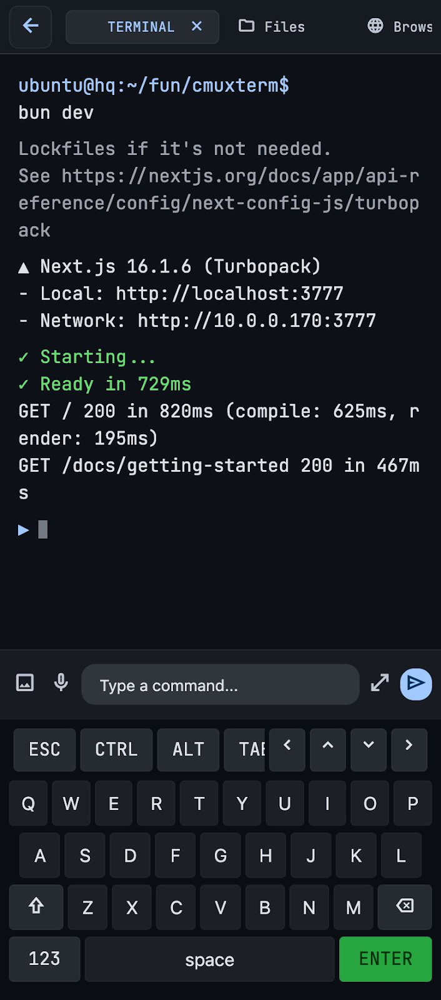

Real SSH terminal
dartssh2 shell + PTY rendered by a patched xterm engine. ANSI color, scrollback, scroll-lock, line wrapping, 60fps target.
AItty SSHes into your remote dev box and gives you a full workspace on the go — terminal, SFTP file browser, an in-app browser over a forwarded port, and git diff, all as tabs. With a thumb-friendly modifier bar, an expandable command editor, and multimodal AI input.

Not a stripped-down SSH client. AItty treats each host as a workspace — everything you reach for while coding, one tap away.
dartssh2 shell + PTY rendered by a patched xterm engine. ANSI color, scrollback, scroll-lock, line wrapping, 60fps target.
Per-host workspaces compose Terminal, SFTP file browser, an in-app browser (over a forwarded port), and a git diff view as switchable tabs.
A modifier accessory bar puts ESC / CTRL / ALT / TAB / arrows under your thumb. An expandable multi-line editor handles longer commands, plus history.
A live state machine per session — connected, processing, awaiting-input, idle, disconnected — with colored accent bars and a last-output preview line.
Browse remote directories with Unix permission strings and sizes, breadcrumb navigation, and a remote start-directory picker for new sessions.
Attach images from the camera or gallery and dictate with your voice. Multimodal input feeds an assistant pipeline so you can reason about the screen without typing a novel.
Save your dev box with a password or imported SSH key. Credentials live in OS secure storage — never in plain prefs. Known-host fingerprints are pinned.
Tap to connect over SSH and spin up a workspace. Terminal, files, a forwarded-port browser, and git diff open as tabs — add and switch as you work.
Use the modifier bar for control keys, the expandable editor for longer commands, and snap a screenshot or dictate to feed the AI pipeline.
Tap any screen to enlarge.
Not yet. AItty is pre-release and currently build-from-source. Run flutter build apk, flutter build ipa, flutter build web, or flutter build macos — see the README.
Android, iOS, macOS, and Web (Chrome). The primary target is phones (Android + iOS); tablet and desktop layouts are secondary.
Through flutter_secure_storage (the OS keychain/keystore), never in plain preferences or committed files. SSH keys are imported and referenced by handle, and known-host fingerprints are pinned with mismatch warnings.
AItty ships a patched copy of xterm.dart at packages/xterm, wired in via dependency_overrides. Terminal-emulator changes happen there. Its license is retained.
Yes — AItty is MIT licensed. See the LICENSE. Contributions welcome; read CONTRIBUTING.md.
Clone AItty, build it, and keep your dev box in your pocket.